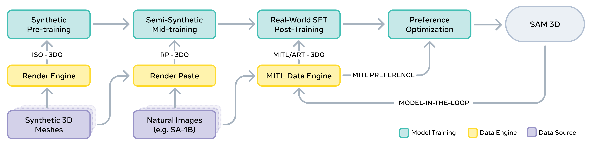
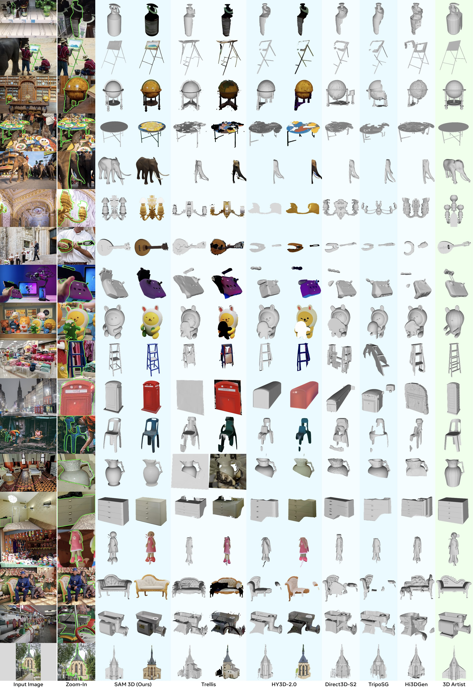

Part 3: Bridging Generation & Reconstruction—CUPID & SAM 3D
🎭 The Fundamental Tension
✨ Pure Generative Models
- 💡 Imagine diverse possibilities from scratch
- 🎨 High creativity and unbiased priors
- ⚠️ Can produce geometrically inconsistent shapes
- ❌ May neglect details visible in input image
- ❌ Struggle with texel-level consistency
🎯 Pure Reconstruction Models
- 🔍 Faithfully preserve observed visual details
- 📐 Geometrically accurate and consistent
- ⚠️ Cannot hallucinate occluded regions
- ❌ Limited by input image resolution/quality
- ❌ Cannot improve on poor input images
The solution: jointly model both aspects through explicit geometric reasoning (pose estimation) or multi-stage refinement.
🎀 CUPID: Pose-Aware Generative Reconstruction
CUPID bridges generation and reconstruction by explicitly modeling camera pose and object geometry jointly. The key insight: if we know where the camera is relative to the object, we can directly inject image features into the correct 3D locations.
Two-Stage Pipeline:
Stage 1: Pose Estimation & Rough Geometry
- Generate occupancy grid (rough shape)
- Generate UV cube (3D-to-2D surface correspondences)
- Solve camera pose via PnP (Perspective-n-Point)
- Output: Estimated camera matrix and approximate geometry
Stage 2: Pixel-Aligned Refinement
- Generate high-fidelity appearance & geometry features
- CRITICAL: Inject pixel-aligned features from input
- Prevents "color drift" (texture-ground-to-3D drift)
- Preserves fine details visible in input image
Technical Achievements:
| Color Consistency | Preserved |
| Geometry Quality | SOTA |
| Input Faithfulness | High |
Key Innovation: Explicit pose modeling enables pixel-to-3D alignment, solving the core weakness of pure generative models.
🔑 Key Innovations:
- Joint pose + geometry generation
- UV cube for 3D-2D correspondence
- PnP-based pose estimation
- Pixel-aligned feature injection
- Color drift elimination
📊 Achievements:
- SOTA generative reconstruction quality
- Faithful texture preservation
- High geometric accuracy
- Superior on benchmark datasets
- Hybrid approach benefits
🚀 SAM 3D: Scale and Real-World Grounding
Inspired by the success of SAM (Segment Anything) in 2D vision, SAM 3D applies massive-scale learning to 3D generation. The philosophy: if we train on diverse real-world 3D data at scale, we learn robust priors for handling occlusion, clutter, and complex scenes.
Model-in-the-Loop Paradigm:
- Stage 1: Coarse 3D layout prediction (bounding box, rotation, scale)
- Stage 2: Per-object refinement (shape and texture)
- Stage 3: Fine-grained surface details and appearances
- Learning Signal: Human feedback + synthetic data augmentation
- Scale: Trained on massive real-world 3D datasets (100K+)
Real-World Performance:
| Occlusion Handling | Excellent |
| Real Image Quality | SOTA |
| Multi-Object Scenes | Supported |
| Cross-Dataset Gen. | Strong |
Strength: Real-world grounding through massive diverse training data
🔑 Key Innovations:
- Multi-stage coarse-to-fine pipeline
- Human-in-the-loop data collection
- Massive-scale training (100K+ shapes)
- Real-world occlusion handling
- Multi-modal (shape + texture)
📊 Achievements:
- SOTA real-world image-to-3D
- Handles cluttered scenes well
- User preference rankings (ELO)
- Cross-dataset generalization
- Robust to diverse input quality



SAM 3D demonstrates real-world robustness through large-scale diverse training and human feedback